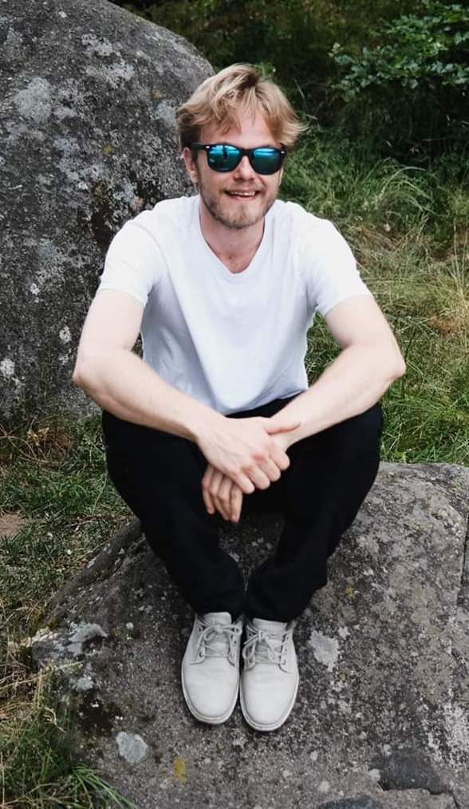

Resultatorienterad och affärsdriven utvecklare med erfarenhet av att bygga och leda tekniska lösningar inom iOS, Android och webb. Van att arbeta nära både teknik och affär för att skapa effektiva och skalbara produkter.
Svenska · Engelska
Etablerade och ledde företagets IT-avdelning samt ansvarade för tekniska beslut. Designade och lanserade flera webbplatser och drev utvecklingen av Helplie, en mobilapplikation för iOS och Android.
Förbättrade digitala strategier, affärsidéer och arbetsflöden samt implementerade och optimerade CMS-lösningar.
Utvecklade mobilapplikationen “Klinisk Handledning” för iOS och Android. Implementerade funktioner som favoriter, filtrering och formulärhantering.
Säkerställde offline-funktionalitet och utvecklade backendintegration med Firebase för autentisering och datalagring.
Vidareutvecklade iOS-applikationer med UIKit och Combine. Ansvarade för hela utvecklingsflödet inklusive UI, API-integration, notifikationer och datalagring.
Införde CI/CD med Bitrise och arbetade nära kund för att säkerställa kvalitet.
Utvecklade digitala lösningar och prototyper för olika klienter. Byggde React-applikationer med Firebase backend och levererade webbplatser med fokus på design och funktionalitet.
Bachelor of Interaction Design
Malmö University (2013 — 2016)
iOS & Android Apputveckling
Malmö Yrkeshögskola (2016 — 2017)
Affärsdriven Applikationsutveckling
Malmö Yrkeshögskola